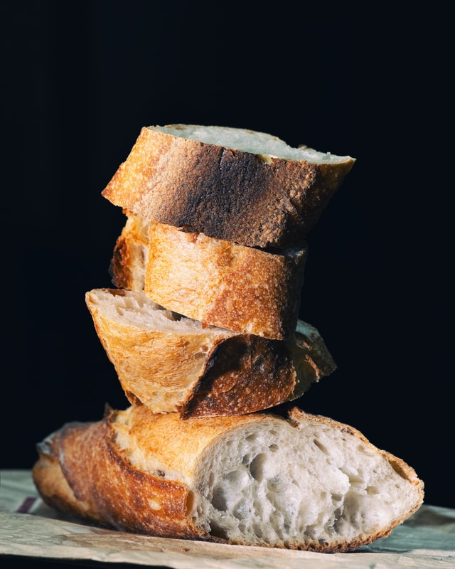
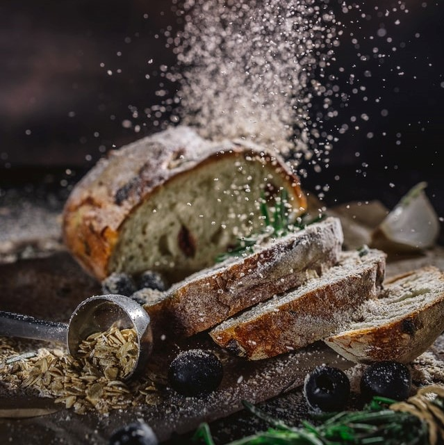

Etymology
The Old English word for bread was hlaf, which appears to be the oldest Teutonic name. Old High German hleib and modern German Laib derive from this Proto-Germanic word, which was borrowed into Slavic (Polish chleb, Russian khleb) and Finnic (Finnish leipä, Estonian leib) languages as well. The Middle and Modern English word bread appears in Germanic languages, such as West Frisian brea, Dutch brood, German Brot, Swedish bröd, and Norwegian and Danish brød; a word that originally meant "broken piece" or "morsel".
Some say that "bread" itself comes from an older root having to do with brewing, in reference to the rising action of the yeast, but it's more likely to have come from a root having to do with breaking things into little pieces.

History
Bread is one of the oldest prepared foods. Evidence from 30,000 years ago in Europe and Australia revealed starch residue on rocks used for pounding plants. It is possible that during this time, starch extract from the roots of plants, such as cattails and ferns, was spread on a flat rock, placed over a fire and cooked into a primitive form of flatbread. The world's oldest evidence of bread-making has been found in a 14,500-year-old Natufian site in Jordan's northeastern desert. Around 10,000 BC, with the dawn of the Neolithic age and the spread of agriculture, grains became the mainstay of making bread. Yeast spores are ubiquitous, including on the surface of cereal grains, so any dough left to rest leavens naturally.
There were multiple sources of leavening available for early bread. Airborne yeasts could be harnessed by leaving uncooked dough exposed to air for some time before cooking. Pliny the Elder reported that the Gauls and Iberians used the foam skimmed from beer called barm to produce "a lighter kind of bread than other peoples" such as barm cake. Parts of the ancient world that drank wine instead of beer used a paste composed of grape juice and flour that was allowed to begin fermenting, or wheat bran steeped in wine, as a source for yeast. The most common source of leavening was to retain a piece of dough from the previous day to use as a form of sourdough starter, as Pliny also reported.

Culinary Uses
Bread can be served at many temperatures; once baked, it can subsequently be toasted. It is most commonly eaten with the hands, either by itself or as a carrier for other foods. Bread can be spread with butter, dipped into liquids such as gravy, olive oil, or soup; it can be topped with various sweet and savory spreads, or used to make sandwiches containing meats, cheeses, vegetables, and condiments.
Bread is used as an ingredient in other culinary preparations, such as the use of breadcrumbs to provide crunchy crusts or thicken sauces; toasted cubes of bread, called croutons, are used as a salad topping; seasoned bread is used as stuffing inside roasted turkey; sweet or savoury bread puddings are made with bread and various liquids; egg and milk-soaked bread is fried as French toast; and bread is used as a binding agent in sausages, meatballs and other ground meat products.

Preparation
Doughs are usually baked, but in some cuisines breads are steamed (e.g., mantou), fried (e.g., puri), or baked on an unoiled frying pan (e.g., tortillas). It may be leavened or unleavened (e.g. matzo). Salt, fat and leavening agents such as yeast and baking soda are common ingredients, though bread may contain other ingredients, such as milk, egg, sugar, spice, fruit (such as raisins), vegetables (such as onion), nuts (such as walnut) or seeds (such as poppy).
Methods of processing dough into bread include the straight dough process, the sourdough process, the Chorleywood bread process and the sponge and dough process.
Cultural Significance
Bread has a significance beyond mere nutrition in many cultures because of its history and contemporary importance. Bread is also significant in Christianity as one of the elements (alongside wine) of the Eucharist, and in other religions including Paganism.
In many cultures, bread is a metaphor for basic necessities and living conditions in general. For example, a "bread-winner" is a household's main economic contributor and has little to do with actual bread-provision. This is also seen in the phrase "putting bread on the table". The Roman poet Juvenal satirized superficial politicians and the public as caring only for "panem et circenses" (bread and circuses). In Russia in 1917, the Bolsheviks promised "peace, land, and bread." The term "breadbasket" denotes an agriculturally productive region. In Slavic cultures bread and salt is offered as a welcome to guests. In India, life's basic necessities are often referred to as "roti, kapra aur makan" (bread, cloth, and house).